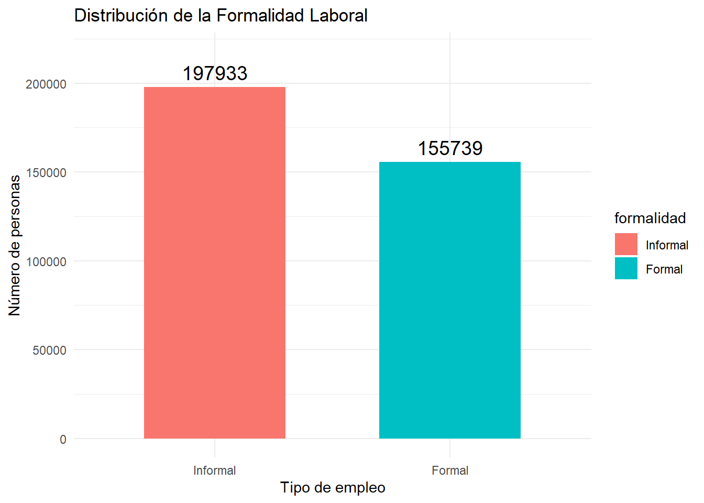
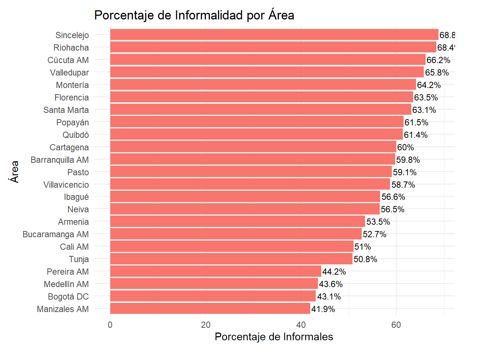
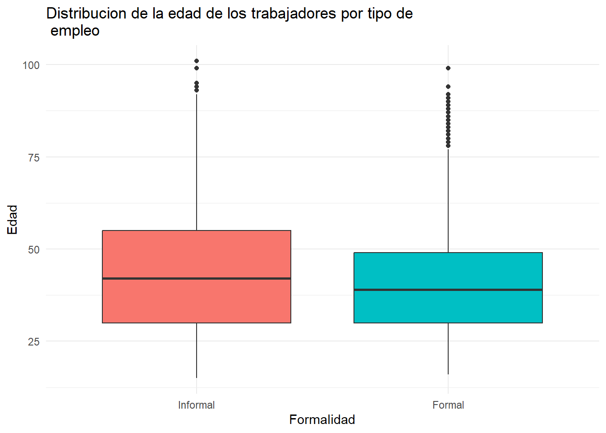
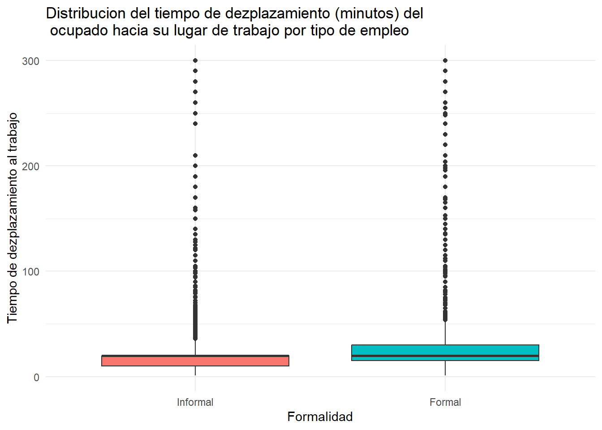
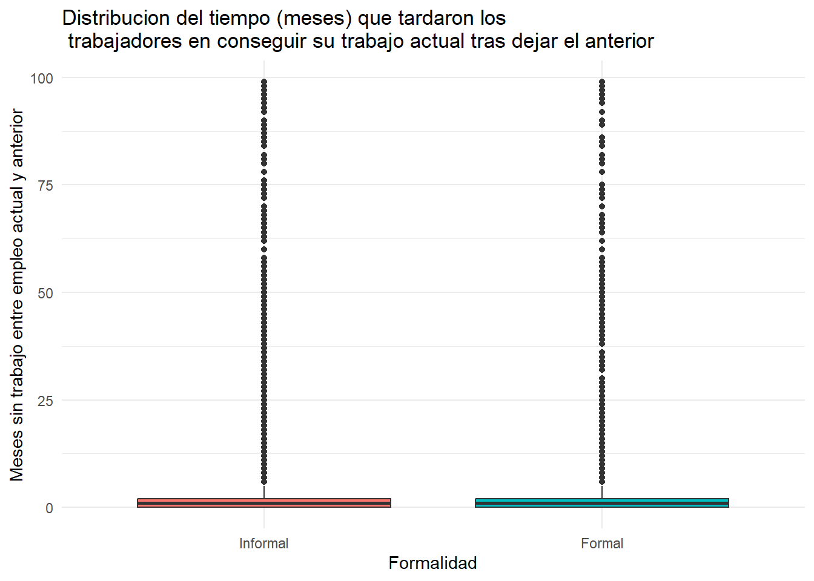
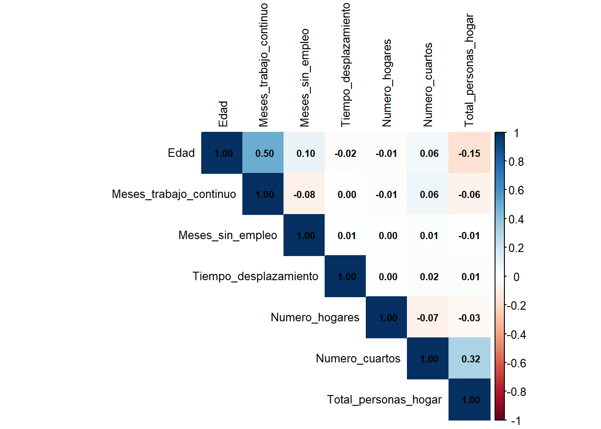
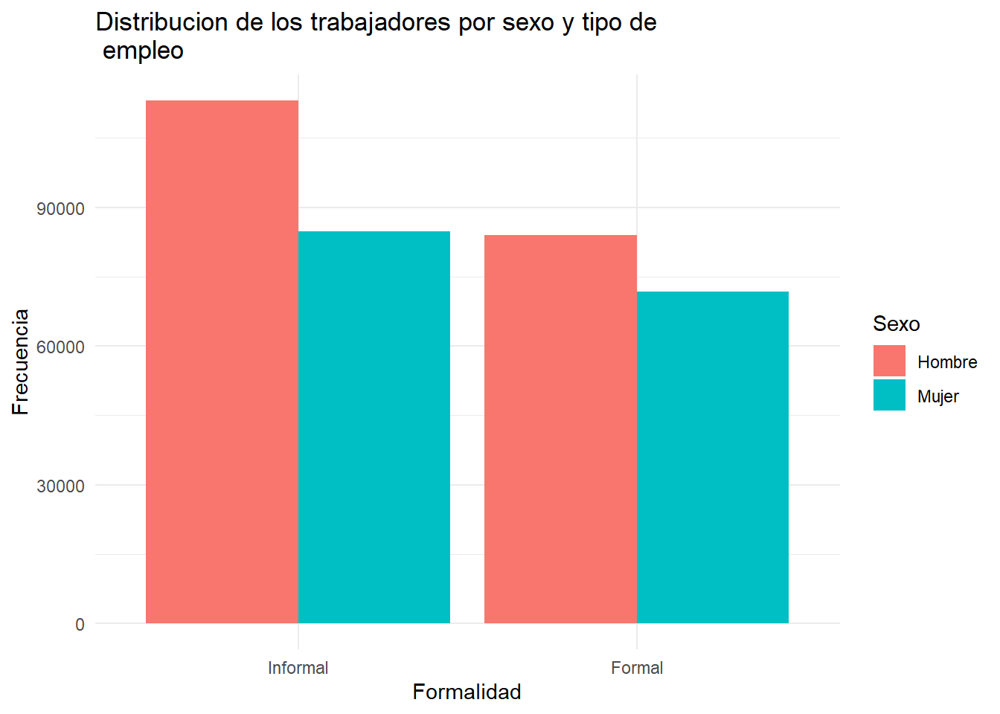
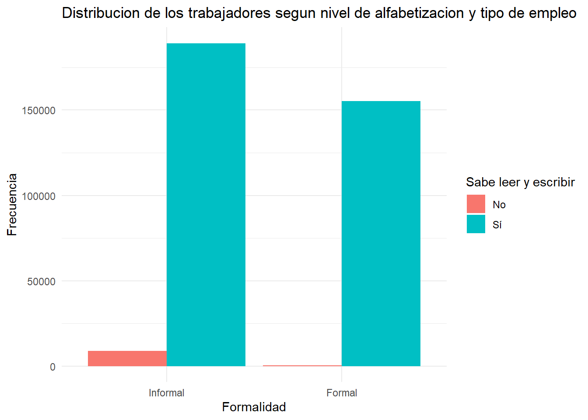
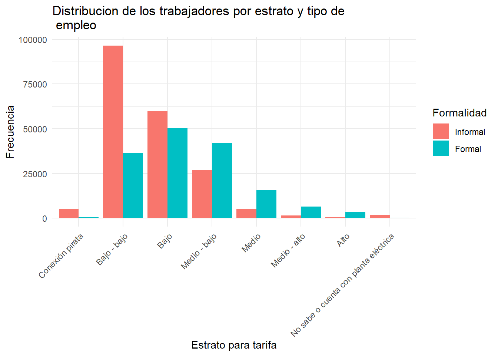

Capítulo 2 Análisis exploratorio de los datos
La Gran Encuesta Integrada de Hogares (GEIH) publicada por el DANE puede ser un gran insumo si se quiere un acercamiento a la realidad socioeconómica de las familias en Colombia. Este trabajo hace uso de este recurso con el fin de encontrar los determinantes con mayor incidencia a la hora de obtener un empleo formal en Colombia. En este apartado se muestran las principales características de los datos encontrados en la GEIH.
La información proveniente de la GEIH se reúne en alrededor de 8 archivos en formato csv por mes. Dentro de cada mes, los distintos archivos cuentan con información en común como lo es el caso de las columnas directorio (identifica a la vivienda), secuencia (identifica al hogar dentro de la vivienda) y orden (identifica a la persona). A partir de estas tres columnas se pudo hacer la concatenación de los 8 archivos por mes para eventualmente reunir toda la información en un solo archivo para el año 2024.
Como resultado de esa concatenación para el año 2024 se obtiene un conjunto de datos de 524 variables y 829.683 filas. Dado que el análisis se realiza con base en la población que afirmó estar ocupada en este año, dicho conjunto se reduce a 353.672 filas. Apartir de la revisión bibliográfica se seleccionaron aquellas variables que los autores han señalado como influyentes en la posibilidad de obtener empleo formal,y el numéro de variables es finalmente reducido a 29 (8 cuantitativas y 21 categóricas). Las variables son las siguientes:
library(knitr)
tabla <- data.frame(
"Tipo de variable" = c(
"Cuantitativa", "Cuantitativa", "Cuantitativa", "Cuantitativa",
"Cuantitativa", "Cuantitativa", "Cuantitativa",
"Cualitativa", "Cualitativa", "Cualitativa", "Cualitativa",
"Cualitativa", "Cualitativa", "Cualitativa", "Cualitativa",
"Cualitativa", "Cualitativa", "Cualitativa", "Cualitativa",
"Cualitativa", "Cualitativa", "Cualitativa", "Cualitativa",
"Cualitativa", "Cualitativa", "Cualitativa", "Cualitativa",
"Cualitativa", "Cualitativa"
),
"Variable" = c(
"Edad",
"¿Cuánto tiempo lleva en esta empresa trabajando de forma continua (meses)?",
"Meses que estuvo sin empleo entre su trabajo actual y el anterior",
"Tiempo de desplazamiento hasta su sitio de trabajo",
"Número de hogares en la vivienda",
"Número de cuartos",
"Total de personas en el hogar",
"AREA",
"CLASE",
"Sexo",
"Parentesco con jefe de hogar",
"¿Usted se reconoce como?",
"Estado civil",
"¿Afiliado, cotizante o beneficiario de seguridad social en salud?",
"Régimen de salud al que está afiliado",
"¿Quién paga por la afiliación en salud?",
"Sabe leer y escribir",
"Mayor nivel educativo alcanzado",
"¿Tiene algún tipo de contrato?",
"Tipo de ocupación",
"Medio para conseguir este empleo",
"Ofrece sus servicios o productos para",
"¿Cotiza actualmente en pensiones?",
"¿Recibió pagos por arriendos o pensiones?",
"¿Es propietario de propiedades inmuebles?",
"Tipo de vivienda",
"¿Tiene servicio de energía eléctrica?",
"Estrato para tarifa",
"La vivienda ocupada por este hogar es"
)
)
kable(tabla, caption = "Listado de variables: cualitativas y cuantitativas")| Tipo.de.variable | Variable |
|---|---|
| Cuantitativa | Edad |
| Cuantitativa | ¿Cuánto tiempo lleva en esta empresa trabajando de forma continua (meses)? |
| Cuantitativa | Meses que estuvo sin empleo entre su trabajo actual y el anterior |
| Cuantitativa | Tiempo de desplazamiento hasta su sitio de trabajo |
| Cuantitativa | Número de hogares en la vivienda |
| Cuantitativa | Número de cuartos |
| Cuantitativa | Total de personas en el hogar |
| Cualitativa | AREA |
| Cualitativa | CLASE |
| Cualitativa | Sexo |
| Cualitativa | Parentesco con jefe de hogar |
| Cualitativa | ¿Usted se reconoce como? |
| Cualitativa | Estado civil |
| Cualitativa | ¿Afiliado, cotizante o beneficiario de seguridad social en salud? |
| Cualitativa | Régimen de salud al que está afiliado |
| Cualitativa | ¿Quién paga por la afiliación en salud? |
| Cualitativa | Sabe leer y escribir |
| Cualitativa | Mayor nivel educativo alcanzado |
| Cualitativa | ¿Tiene algún tipo de contrato? |
| Cualitativa | Tipo de ocupación |
| Cualitativa | Medio para conseguir este empleo |
| Cualitativa | Ofrece sus servicios o productos para |
| Cualitativa | ¿Cotiza actualmente en pensiones? |
| Cualitativa | ¿Recibió pagos por arriendos o pensiones? |
| Cualitativa | ¿Es propietario de propiedades inmuebles? |
| Cualitativa | Tipo de vivienda |
| Cualitativa | ¿Tiene servicio de energía eléctrica? |
| Cualitativa | Estrato para tarifa |
| Cualitativa | La vivienda ocupada por este hogar es |
Dado que tener un empleo formal no es una variable que se pueda encontrar de manera explícita en la base de datos, es necesario construir una variable respuesta que clasifique a los individuos como empleado formal o informal. La informalidad podria definirse como el conjunto de actividades económicas que ignoran las regulaciones comerciales y laborales. A pesar de la ausencia de una variable respuesta definida en el conjunto de datos, saber si la persona cotiza en salud como contribuyente o especial, y si además cotiza en pensiones, puede ser un claro indicio de formalidad, y es a partir de esa idea que en este modelo se incluye una variable llamada “formalidad” (formal = 1, informal = 0).
Dentro de este ejercicio, el individuo tendrá que haber respondido sí a ambas preguntas para poder ser clasificado como formal. Si cotiza solo en una de las dos o en ninguna, clasifica como informal.
##
## Adjuntando el paquete: 'dplyr'## The following objects are masked from 'package:data.table':
##
## between, first, last## The following objects are masked from 'package:stats':
##
## filter, lag## The following objects are masked from 'package:base':
##
## intersect, setdiff, setequal, union## Cargando paquete requerido: colorspace## Cargando paquete requerido: grid## VIM is ready to use.## Suggestions and bug-reports can be submitted at: https://github.com/statistikat/VIM/issues##
## Adjuntando el paquete: 'VIM'## The following object is masked from 'package:datasets':
##
## sleep##
## Adjuntando el paquete: 'mice'## The following object is masked from 'package:stats':
##
## filter## The following objects are masked from 'package:base':
##
## cbind, rbind##
## Adjuntando el paquete: 'kableExtra'## The following object is masked from 'package:dplyr':
##
## group_rowsLuego del procesamiento de los datos, Se procede con el diagnóstico de datos faltantes y se encuentra que algunas variables tenían cierta cantidad de datos nulos como se muestra a continuación.
variables_con_na <- c(
"AREA",
"Meses que estuvo sin empleo entre su trabajo actual y el anterior",
"Tiempo de desplazamiento hasta su sitio de trabajo",
"Ingresos laborales",
"Régimen de salud al que está afiliado",
"Estrato para tarifa",
"La vivienda ocupada por este hogar es"
)
#tabla de porcentaje de NA
tabla_na <- datos2 %>%
select(all_of(variables_con_na)) %>%
summarise(across(everything(), ~ mean(is.na(.)) * 100)) %>%
pivot_longer(everything(), names_to = "Variable", values_to = "Porcentaje_NA") %>%
arrange(desc(Porcentaje_NA))
print(tabla_na)## # A tibble: 7 × 2
## Variable Porcentaje_NA
## <chr> <dbl>
## 1 Meses que estuvo sin empleo entre su trabajo actual y el anteri… 27.6
## 2 Tiempo de desplazamiento hasta su sitio de trabajo 14.3
## 3 Ingresos laborales 4.28
## 4 AREA 0
## 5 Régimen de salud al que está afiliado 0
## 6 Estrato para tarifa 0
## 7 La vivienda ocupada por este hogar es 0La tabla 2 resume las variables con porcentaje de datos faltantes mayor a 5%. Las variables categóricas cuyo porcentaje de valores nulos fue cercano a cero, fueron imputadas por su moda y la función polyreg (Polynomial Regression) del software R. Por su parte, las variables númericas fueron imputadas por su mediana o por la función “norm.predict”(imputación por regresión). Sin la existencia de datos faltantes, es posible ahora observar el comportamiento de las variables incluídas en la GEIH.
datos <- fread("C:/Users/moisesdp/Documents/Trabajo de profundizacion/data_filtrada_imputada.csv")
datos3 <- fread("C:/Users/moisesdp/Documents/Trabajo de profundizacion/data_filtrada_imputada.csv")
datos3$formalidad <- factor(datos$formalidad, levels = c(0, 1), labels = c("Informal", "Formal"))
# Contar frecuencia absoluta
df_formalidad <- datos3 %>%
count(formalidad)
# Graficar
ggplot(df_formalidad, aes(x = formalidad, y = n, fill = formalidad)) +
geom_col(width = 0.6) +
geom_text(aes(label = n),
vjust = -0.5, size = 5) +
scale_fill_manual(values = c("Informal" = "#F8766D", "Formal" = "#00BFC4")) +
labs(title = "Distribución de la Formalidad Laboral",
x = "Tipo de empleo", y = "Número de personas") +
ylim(0, max(df_formalidad$n) * 1.1) + # Deja espacio arriba para el texto
theme_minimal() La población ocupada se dedica principalmente a actividades informales como se observa en la anterior gráfica. Se afirma a partir de estos resultados que un 55,9% de los ocupados en Colombia fueron informales, mientras que un 44,1% de los trabajadores gozaban de pro tección social en el año 2024. Dentro de las ciudades que reportaron las más altas tasas de informalidad se encuentran Sincelejo (68,8%), Riohacha (68,4%) y Cúcuta (66,2%). Mien tra que las ciudades con menores tasas de informalidad (y por consiguiente quienes tienen mayor proporción de trabajadores formalizados) fueron Medellín (43,6%), Bogotá (43,1%) y Manizales (41,9%) como se muestra en la figura siguiente.
datos$formalidad <- as.numeric(as.character(datos$formalidad))
# Calcular porcentaje de informales por AREA
df_informal_area <- datos %>%
group_by(AREA) %>%
summarise(
total = n(),
informales = sum(formalidad == 0, na.rm = TRUE),
porcentaje_informal = informales / total * 100
) %>%
arrange(desc(porcentaje_informal))
# Gráfico de barras horizontales
ggplot(df_informal_area, aes(x = reorder(AREA, porcentaje_informal), y = porcentaje_informal)) +
geom_col(fill = "#F8766D") +
geom_text(aes(label = paste0(round(porcentaje_informal, 1), "%")),
hjust = -0.05, size = 3) +
labs(title = "Porcentaje de Informalidad por Área",
x = "Área",
y = "Porcentaje de Informales") +
coord_flip() +
theme_minimal() +
theme(
plot.margin = margin(t = 10, r = 40, b = 10, l = 10) # margen derecho ampliado
)
2.1 Variables cuantitativas
datos_df <- as.data.frame(datos)
# Variables numéricas
excluir <- c("FEX_C18", "MES", "formalidad")
num_vars <- names(datos_df)[sapply(datos_df, is.numeric) & !(names(datos_df) %in% excluir)]
# lista de tablas resumen, una por cada variable numérica
tablas_por_variable <- lapply(num_vars, function(var) {
variable <- datos_df[[var]]
resumen <- data.frame(
Variable = var,
Media = mean(variable, na.rm = TRUE),
Desviación_Estándar = sd(variable, na.rm = TRUE),
Mediana = median(variable, na.rm = TRUE)
)
return(resumen)
})
# Nombrar cada elemento de la lista con el nombre de la variable
names(tablas_por_variable) <- num_vars
# Mostrar todas las tablas una por una
for (tabla in tablas_por_variable) {
print(tabla)
cat("\n----------------------------------------\n\n")
}## Variable Media Desviación_Estándar Mediana
## 1 Edad 41.71925 14.09951 40
##
## ----------------------------------------
##
## Variable
## 1 ¿Cuánto tiempo lleva en esta empresa trabajando de forma continua (meses)?
## Media Desviación_Estándar Mediana
## 1 83.8611 111.7203 36
##
## ----------------------------------------
##
## Variable Media
## 1 Meses que estuvo sin empleo entre su trabajo actual y el anterior 4.024367
## Desviación_Estándar Mediana
## 1 11.05877 1
##
## ----------------------------------------
##
## Variable Media
## 1 Tiempo de desplazamiento hasta su sitio de trabajo 23.74497
## Desviación_Estándar Mediana
## 1 21.98319 20
##
## ----------------------------------------
##
## Variable Media Desviación_Estándar Mediana
## 1 Ingresos laborales 1653886 2262285 1300000
##
## ----------------------------------------
##
## Variable Media Desviación_Estándar Mediana
## 1 Número de hogares en la vivienda 1.017228 0.1659853 1
##
## ----------------------------------------
##
## Variable Media Desviación_Estándar Mediana
## 1 Número de cuartos 3.398123 1.132351 3
##
## ----------------------------------------
##
## Variable Media Desviación_Estándar Mediana
## 1 Total de personas en el hogar 3.407674 1.712066 3
##
## ----------------------------------------En la anterior tabla se muestra el resumen estadístico de las variables cuantitativas que caracterizaron a la probación ocupada en Colombia en el 2024. En esta tabla se puede observar, por ejemplo, que el promedio de edad de las personas ocupadas en Colombia es 41.71 años con una desviación estándar de 14.09 años. El tiempo promedio de meses que estuvo sin empleo una persona entre su trabajo actual y el anterior es de aproximadamente 4 meses con una desviación estándar de 11 meses. Por otro lado el tiempo medio que una persona tarde en desplazarse hasta su lugar de trabajo es de 24 minutos con una desviación estándar de 21 minutos.
library(moments)
variables_clave <- c("Edad", "Ingresos laborales", "¿Cuánto tiempo lleva en esta empresa trabajando de forma continua (meses)?",
"Meses que estuvo sin empleo entre su trabajo actual y el anterior", "Tiempo de desplazamiento hasta su sitio de trabajo",
"Número de cuartos", "Número de hogares en la vivienda", "Total de personas en el hogar")
variables_clave <- intersect(variables_clave, names(datos))
resultados <- data.frame(
Variable = character(),
Skewness = numeric(),
Kurtosis = numeric(),
stringsAsFactors = FALSE
)
for (var in variables_clave) {
x <- datos[[var]]
skew <- round(skewness(x, na.rm = TRUE), 2)
kurt <- round(kurtosis(x, na.rm = TRUE), 2)
resultados <- rbind(resultados, data.frame(Variable = var, Skewness = skew, Kurtosis = kurt))
}
print(resultados)## Variable
## 1 Edad
## 2 Ingresos laborales
## 3 ¿Cuánto tiempo lleva en esta empresa trabajando de forma continua (meses)?
## 4 Meses que estuvo sin empleo entre su trabajo actual y el anterior
## 5 Tiempo de desplazamiento hasta su sitio de trabajo
## 6 Número de cuartos
## 7 Número de hogares en la vivienda
## 8 Total de personas en el hogar
## Skewness Kurtosis
## 1 0.36 2.37
## 2 13.51 399.79
## 3 2.07 7.55
## 4 5.63 40.82
## 5 4.33 37.05
## 6 9.89 770.62
## 7 12.52 206.78
## 8 1.31 7.37Pruebas estadísticas de normalidad como Shapiro-Wilk o Kolmogorov-Smirnov pueden ser no adecuadas dado el tamaño de la muestra del presente trabajo. En este caso se utiliza una medida descriptiva como los contrastes de asimetría y curtosis que, según Álvarez et al. (2006) ayudan a determinar si la forma de la distribución de las observaciones muestrales se aleja significativamente de la de un modelo normal en cuanto a su simetría y curtosis. Si una variable aleatoria sigue una distribución normal, ambos coeficientes son nulos (0). Con base en los resultado mostrados en la tabla anterior, Edad parecería ser la única variable que podría seguir una distribución normal.
library(stringi)
titulo <- stri_trans_general("Distribución de la edad de los trabajadores por tipo de
empleo", "Latin-ASCII")
ggplot(datos, aes(x = factor(formalidad, labels = c("Informal", "Formal")), y = Edad)) +
geom_boxplot(fill = c("#F8766D", "#00BFC4")) +
labs(title = titulo,
x = "Formalidad",
y = "Edad") +
theme_minimal() Al analizar, por ejemplo, la edad del ocupado en función de si es formal o informal se ha encontrado que existe mayor variabilidad en la edad dentro del grupo de informales en comparación con los formales. No existen grandes diferencias entre la edad mediana de ambos grupos, y se evidencia presencia de outliers en ambas categorías con mayor cantidad dentro de los formales.
Para afirmar con certeza si existen diferencias entre la edad de los trabajadores de ambos grupos se aplica la prueba no paramétrica de Mann-Whitney-Wilcoxon. Entonces, se tiene que: H0: No hay diferencia en la distribución de la edad en trabajadores formales e informales. H1 Existen diferencias en la distribución de la edad en trabajadores formales e informales.
##
## Wilcoxon rank sum test with continuity correction
##
## data: Edad by formalidad
## W = 1.6709e+10, p-value < 2.2e-16
## alternative hypothesis: true location shift is not equal to 0Al aplicar la prueba se tiene un p-valor de 2.2e-16, el cual es menor al nivel de significancia (5%), por lo que se rechaza la hipótesis nula, y se afirma que existe suficiente evidencia estadística para concluir que hay diferencias entre la edad mediana de ambos grupos.
titulo <- stri_trans_general("Distribución del tiempo de dezplazamiento (minutos) del
ocupado hacia su lugar de trabajo por tipo de empleo", "Latin-ASCII")
ggplot(datos, aes(x = factor(formalidad, labels = c("Informal", "Formal")), y = `Tiempo de desplazamiento hasta su sitio de trabajo`)) +
geom_boxplot(fill = c("#F8766D", "#00BFC4")) +
labs(title = titulo,
x = "Formalidad",
y = "Tiempo de dezplazamiento al trabajo") +
theme_minimal()
Con relación al tiempo que toma el trabajador en llegar a su trabajo, se encuentra que el tiempo mediano es mayor dentro de los formales en comparación con los informales. Existe mayor variabilidad dentro del grupo de formales así como mayor presencia de datos atípicos. Todo esto podría dar luces de que los trabadores formales toman mayor tiempo en trasladarse hacia su puesto de trabajo que los informales.
Se aplica la prueba de Mann-Whitney-Wilcoxon bajo las siguientes hipótesis: H0: No hay diferencias en el tiempo de desplazamiento (minutos) hacia el sitio de trabajo en empleados formales e informales. H1 Existen diferencias en el tiempo de desplazamiento (minutos) hacia el sitio de trabajo en empleados formales e informales
##
## Wilcoxon rank sum test with continuity correction
##
## data: Tiempo de desplazamiento hasta su sitio de trabajo by formalidad
## W = 1.2742e+10, p-value < 2.2e-16
## alternative hypothesis: true location shift is not equal to 0p-value: 2.2e-16. Un p-valor menor al nivel de significancia permite rechazar la hipótesis nula, y afirmar que hay suficiente evidencia estadística para concluir que existen diferencias entre el tiempo mediano que toma el trabajador en movilizarse hacia su puesto de trabajo en ambos grupos.
titulo <- stri_trans_general("Distribución del tiempo (meses) que tardaron los
trabajadores en conseguir su trabajo actual tras dejar el anterior", "Latin-ASCII")
ggplot(datos, aes(x = factor(formalidad, labels = c("Informal", "Formal")), y = `Meses que estuvo sin empleo entre su trabajo actual y el anterior`)) +
geom_boxplot(fill = c("#F8766D", "#00BFC4")) +
labs(title = titulo,
x = "Formalidad",
y = "Meses sin trabajo entre empleo actual y anterior") +
theme_minimal()
En la gráfica anterior se evidencia que no existen mayores diferencias entra la variabilidad de formales e informales cuando se habla del tiempo desempleado de un trabajador entre su empleo actual y el anterior. Por otro lado se evidencia una presencia mayoritaria de outliers para ambos grupos. De igual forma se aplica la prueba de Mann-Whitney-Wilcoxon bajo las siguientes hipótesis: H0: No hay diferencias en el tiempo (meses) que el ocupado estuvo sin empleo entre su trabajo actual y el anterior entre formales e informales. H1: Existen diferencias en el tiempo (meses) que el ocupado estuvo sin empleo entre su trabajo actual y el anterior entre formales e informales.
wilcox.test(`Meses que estuvo sin empleo entre su trabajo actual y el anterior` ~ formalidad, data = datos3)##
## Wilcoxon rank sum test with continuity correction
##
## data: Meses que estuvo sin empleo entre su trabajo actual y el anterior by formalidad
## W = 1.6473e+10, p-value < 2.2e-16
## alternative hypothesis: true location shift is not equal to 0p-value: 2.2e-16. Con un p-valor menor al nivel de significancia se puede rechazar la hipótesis nula y afirmar que hay suficiente evidencia estadística para concluir que existen diferencias entre el tiempo mediano que el trabajador estuvo sin empleo entre su anterior trabajo y el actual al comparar ambos grupos.
2.1.1 Matriz de correlación
Al realizar análisis de correlación entre las variables númericas se observa que la mayoría de los coeficientes son cercanos a cero, lo que indica ausencia de correlación entre ellas. Sin embargo, algo distinto a esto se presenta entre las variables edad y meses de trabajo continuo en el empleo y número de cuartos y total de personas en el hogar. Se evalúa el factor de inflación de varianza más adelante para descartar multicolinealidad.
## corrplot 0.95 loadedsetDT(datos)
numericas <- datos[, .(
Edad,
Meses_trabajo_continuo = datos[[16]],
Meses_sin_empleo = datos[[19]],
Tiempo_desplazamiento = datos[[20]],
Numero_hogares = datos[[27]],
Numero_cuartos = datos[[28]],
Total_personas_hogar = datos[[30]]
)]
# Calcular la matriz de correlación
matriz_cor <- cor(numericas, use = "complete.obs")
# Visualizar con corrplot
corrplot(matriz_cor, method = "color", type = "upper",
tl.cex = 0.8, tl.col = "black",
addCoef.col = "black", number.cex = 0.7)
2.1.2 Manejo de datos atípicos
Al analizar los outliers se encuentra que hay variables que tienen una gran presencia de datos atípicos dentro del conjunto de datos como es el caso del tiempo en meses que demoró un ocupado sin empleo entre su ocupación actual y la anterior, o como la variable ingresos laborales que cuenta con 32.306 observaciones atípicas (ver la siguiente tabla). Esto se pudo evidenciar por medio de los gráfico de boxplot mostrados anteriormente.
outliers <- lapply(numericas, function(x) boxplot.stats(x)$out)
outliers_summary <- sapply(outliers, length)
outliers_summary## Edad Meses_trabajo_continuo Meses_sin_empleo
## 175 25971 56463
## Tiempo_desplazamiento Numero_hogares Numero_cuartos
## 10554 4643 23354
## Total_personas_hogar
## 8406Para el tratamiento de datos atípicos se recurre a la “winsorización”, que consiste en reem plazar el dato atípico con el valor más cercano que no es un dato anómalo. Este método fue útil para la investigación de Szántó (2023) dado que mejoró el rendimiento de su modelo propuesto para la predicción de riesgo de incumplimiento crediticio por parte de usuarios.
#library(DescTools)
#library(data.table)
# vars_excluir <- c("FEX_C18", "formalidad")
#vars_winsorizar <- setdiff(
#names(datos)[sapply(datos, is.numeric)],
#vars_excluir
#)
#datos_winsor <- copy(datos)
#datos_winsor[, (vars_winsorizar) := lapply(.SD, function(x)
#Winsorize(x, val = quantile(x, probs = c(0.01, 0.99), na.rm = TRUE))
#), .SDcols = vars_winsorizar]
# Guardar archivo CSV
#write.csv(datos_winsor, "C:/Users/moisesdp/Documents/Trabajo de profundizacion/datos_winsor.csv",
#row.names = FALSE)datos_winsor <- fread("C:/Users/moisesdp/Documents/Trabajo de profundizacion/datos_winsor.csv")
summary(datos$`Meses que estuvo sin empleo entre su trabajo actual y el anterior`)## Min. 1st Qu. Median Mean 3rd Qu. Max.
## 0.000 0.000 1.000 4.024 2.000 99.000## Min. 1st Qu. Median Mean 3rd Qu. Max.
## 0.000 0.000 1.000 3.757 2.000 60.0002.1.3 Variables cualitativas
Dentro de las variables cualitativas se evidencia en la siguiente gráfica que son los hombres quienes más se dedican a actividades informales en comparación con las mujeres. Dentro del grupo de formales la brecha no es tan grande entre ambos sexos.
ggplot(datos, aes(x = factor(formalidad, labels = c("Informal", "Formal")), fill = factor(Sexo, labels = c("Hombre", "Mujer")))) +
geom_bar(position = "dodge") +
labs(title = "Distribucion de los trabajadores por sexo y tipo de
empleo",
x = "Formalidad",
y = "Frecuencia",
fill = "Sexo") +
theme_minimal() El siguiente gráfico permite observar que la proporción de ocupados que no saben leer y escribir es menor dentro del grupo de ocupados formales en comparación con los informales. Lo que podría evidenciar que tiene mayor ventaja una persona educada de conseguir un empleo formal contrario a una persona que es analfabeta.
library(ggplot2)
ggplot(datos, aes(
x = factor(formalidad, labels = c("Informal", "Formal")),
fill = factor(`Sabe leer y escribir`, labels = c("No", "S\u00ED"))
)) +
geom_bar(position = "dodge") +
labs(
title = "Distribucion de los trabajadores segun nivel de alfabetizacion y tipo de empleo",
x = "Formalidad",
y = "Frecuencia",
fill = "Sabe leer y escribir"
) +
theme_minimal()
Al graficar la distrubición de los empleados formales e informales según estrato se evidencia que a partir del estrato medio son los ocupados formales quienes mayor presencia tienen dentro de la casificación de estos estratos. Este hallazgo va en la línea de investigaciones que sugieren que familias con mayores ingresos tienen mayor probabilidad de un empleo formal.
niveles_estrato <- c(
"Conexión pirata",
"Bajo - bajo",
"Bajo",
"Medio - bajo",
"Medio",
"Medio - alto",
"Alto",
"No sabe o cuenta con planta eléctrica"
)
datos$`Estrato para tarifa` <- factor(datos$`Estrato para tarifa`, levels = niveles_estrato)
ggplot(datos, aes(x = `Estrato para tarifa`, fill = factor(formalidad, labels = c("Informal", "Formal")))) +
geom_bar(position = "dodge") +
labs(title = "Distribucion de los trabajadores por estrato y tipo de
empleo",
x = "Estrato para tarifa",
y = "Frecuencia",
fill = "Formalidad") +
theme_minimal() +
theme(axis.text.x = element_text(angle = 45, hjust = 1))